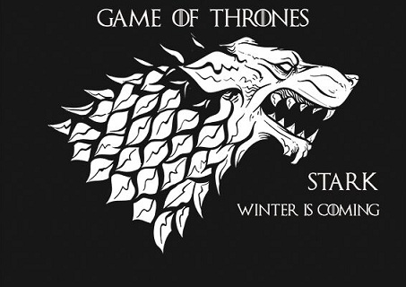
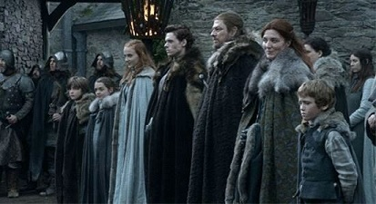
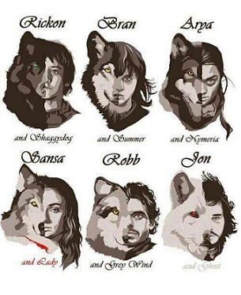

Os Starks
{kind=link}
A Casa Stark de Winterfell é uma das grandes casas de Westeros e a principal casa nobre do Norte, muitas casas menores são seus vassalos. Nos dias antigos eles governaram como Reis do Inverno, mas desde a conquista Targaryen têm sido os Protetores do Norte. Sua sede, Winterfell, é um antigo castelo famoso por sua força. O selo dos Starks é um lobo gigante cinzento correndo em um campo branco de gelo, e seu lema é "O Inverno está Chegando". Vários PDV (personagens com ponto de vista) principais são membros desta casa.
História
Os Starks são uma casa antiga do Norte, fundada por Bran, o Construtor, uma figura lendária da Era dos Heróis que construiu, milhares de anos no passado, a sua sede ancestral em Winterfell, bem como a Muralha. Eles são descendentes dos Primeiros Homens e ainda seguem suas antigas tradições e acreditam nos Deuses Antigos da floresta. No norte os Stark foram Reis do Inverno por milhares de anos na Era dos Heróis. Desde a construção da Muralha por Bran, os Starks são amigos da Patrulha da Noite. O Rei da Noite, o 13º. Senhor Comandante da Patrulha da Noite, entre suas muitas origens possíveis, pode ter sido um Stark. Os Starks também ajudaram a repelir diversas das grandes invasões dos selvagens, por exemplo, quando eles e seus vassalos Umbers, derrotaram os Reis-para-lá-da-Muralha como os irmãos Gendel e Gorne, bem como Bael, o Bardo, que de tanto desejar lutou contra os Starks. Por vários milênios, os Stark não foram os reis incontestáveis do Norte. Os seus principais adversários eram os Boltons do Forte do Pavor, que só juraram fidelidade cerca de 1 000 anos antes da Conquista. Enquanto isso, o rei Jon Stark ergueu a fortaleza de Toca do Lobo para defender a foz do Faca Branca contra corsários vindos do mar. A cidade de Porto Branco cresceu em entorno da fortaleza, sendo a morada de muitos filhos, irmãos, tios e primos do Rei no Norte ou de outros vassalos antes de finalmente ser concedida aos Manderlys. Rickard, filho do Rei Jon, derrotou os cranogmanos e se casou com a filha do seu rei Reed, trazendo o Gargalo para o reino de Winterfell. Os Karstarks foram fundados quando Karlon Stark, irmão do rei do norte, ajudou a conter a revolta dos Boltons e recebeu a fortaleza de Karhold como recompensa. Finalmente, a Ilha dos Ursos foi concedida aos Mormonts quando o rei Rodrik Stark a ganhou dos homens de ferro em uma luta. Os Stark lutaram contra os Arryn do Vale pelas Três Irmãs, eventualmente cedendo o controle dessas ilhas. Além dos Karstark, os Stark de Winterfell também tem parentes distantes em outras partes do Norte, como em Porto Branco.  Após a morte do Mão do Rei, o lorde Jon Arryn, o rei Robert I Baratheon viajou até Winterfell para oferecer ao lorde Eddard "Ned" Stark o cargo de Mão.Logo em seguida, uma carta chega de Lysa Arryn, viúva de Jon e irmão de Catelyn Stark, esposa de Eddard, que afirma que os Lannisters estavam por trás da repentina morte do lorde Arryn. A pedido de Catelyn, Ned relutantemente aceita a posição oferecida pelo rei e aceita casar sua filha Sansa com o príncipe Joffrey Baratheon. Durante a festa real, o segundo filho de Eddard, Bran, acidentalmente flagrou a rainha Cersei Lannister fazendo sexo com o seu irmão gêmeo, Sor Jaime. Jaime joga Bran pela janela da torre, esperando mata-lo para manter sua relação com sua irmã em segredo. Bran sobreviveu, mas fica paraplégico e entrou num coma. Eddard parte para Porto Real junto com suas filhas, Sansa e Arya, enquanto Catelyn permanece Winterfell com seus filhos homens. Enquanto isso, o filho bastardo de Ned, Jon Snow, parte para o norte com seu tio Benjen para se juntar a Patrulha da Noite. Catelyn está inconsolável a respeito da situação de Bran, ignorando suas funções como governante de Winterfell na ausência do marido, com a responsabilidade recaindo sobre os ombros do seu filho mais velho (e herdeiro de Ned), Robb Stark. Em uma noite, um homem tenta matar Bran, mas ele e a mãe são salvos pelo lobo Verão. Enquanto Bran está em coma, ele começa a ter visões do corvo de três olhos. Perto do Vau Rubi e da Estalagem do Entroncamento, Arya defende seu amigo Mycah da agressão do príncipe Joffrey Baratheon, irritando Sansa. Isso é exacerbado quando o lobo gigante de Sansa, Lady, é morto no lugar do lobo de Arya, Nymeria, que conseguiu escapar. Em Porto Real, Eddard fica ultrajado ao saber que, embora a Coroa esteja endividada (principalmente a Tywin Lannister), o rei Robert pretende realizar um grande torneio em honra a sua nova Mão. Ned começa então a investigar a morte de Jon Arryn, determinado a saber porque ele estava buscando os bastardos de Robbert. O rei então convoca o Pequeno Conselho para maquinar a morte da exilada Daenerys Targaryen, que havia se casado com um poderoso khal Dothraki. Ned se recusa a aceitar a recomendação de assassina-la e se demite do posto de Mão. Nas ruas da capital, ele é abordado por vários soldados Lannister que o atacam como represália pela abdução por Catelyn Stark de Tyrion Lannister, que, segundo Petyr Baelish, foi o responsável pelo atentado contra a vida de Bran. A perna de Ned é quebrada durante o ataque e os homens que o protegiam são mortos, mas ele sobrevive e Robert re-confirma ele na posição de Mão e então parte para uma caçada, deixando Ned ocupando o Trono de Ferro. Na sua capacidade de Mão do Rei, ele envia um grande número de homens, incluindo soldados da Casa Stark, para deter Sor Gregor Clegane, que estava fazendo arrastões nas Terras Fluviais. Os ataques de Gregor acontecem sob ordens do Lorde Tywin Lannister; Tywin esperava atrair Lorde Eddard Stark para as Terras Fluviais e então captura-lo e troca-lo por Tyrion. Os homens enviados para deter Gregor são emboscados e muitos morrem. Enquanto isso, na Muralha, Jon Snow está sob tutela do cruel Sor Alliser Thorne. Ele se torna amigo de Samwell Tarly e começa a fazer uma boa fama dentro da Patrulha, embora ainda seja zombado por alguns por ser um bastardo. Ele também encontra um pouco do mal que assombra a região além da Muralha quando o corpo de dois companheiros assassinados da companhia do seu tio acabam ressuscitando em Castelo Negro; Jon protege o comandante da Patrulha, Jeor Mormont, matando uma das criaturas.  Eventualmente, Ned chega a mesma conclusão que Jon Arryn fez: os filhos da rainha Cersei não eram de Robert, mas bastardos nascidos de incesto entre os irmãos Lannister e teriam matado lorde Jon para impedir que ele expusesse a verdade ao mundo. Ele se aproxima de Cersei com a verdade que descobriu, avisando para ela deixar a cidade. Contando com Lorde Baelish para recrutar a Patrulha da Cidade, Ned confronta Cersei após a morte do rei Robert em um acidente de caça, insistindo que agora Stannis Baratheon, irmão do rei, era o monarca de direito. Baelish acaba traindo Ned e seus homens são mortos pelos guardas, liderados por Janos Slynt. Eddard acaba sendo jogado num calabouço. Sansa é mantida como refém na Fortaleza Vermelha, mas Arya consegue escapar com a ajuda de Syrio Forel, um mestre de espadas que Ned havia contratado para ensinar a filha a lutar. Robb Stark, ao saber da notícia da prisão do pai em Porto Real, convoca os vassalos do Norte para Winterfell e começa uma marcha para o sul com seus homens. Catelyn extrai uma aliança de casamento com a Casa Frey para negociar a passagem da tropa nortenha pelo Tridente, nas Gêmeas. Robb lança sua ofensiva contra os Lannister e quebra o seu exército nas Terras Fluviais, conseguindo capturar Sor Jaime, destruindo sua tropa, forçando Lorde Tywin a recuar. Ned inicialmente se recusa a reconhecer o filho de Cersei Joffrey I como o verdadeiro rei de Westeros, mas depois concorda em aceitar sua culpa para evitar que Sansa fosse maltratada. Cersei planejava que, após a confissão de culpa de Eddard, ele seria mandado para o exílio na Patrulha da Noite e o trono do seu filho estaria assegurado, mas Joffrey, um garoto impulsivo e cruel, ordena a execução sumária de Ned. Logo em seguida, os lordes nortenhos e das terras fluviais reúnem um conselho de guerra em Correrrio para discutir o que fazer agora. Eles decidem romper com o Trono de Ferro e proclamam Robb Stark como o Rei do Norte e do Tridente. Enquanto isso, Benjen segue desaparecido além da Muralha e Jon Snow, sofrendo com a morte do pai, contempla desertar a Patrulha da Noite para ir lutar no sul. Seus colegas de negro, contudo, o convencem a ficar. Ele então parte com Jeor Mormont, junto com centenas de homens, em uma grande expedição, para encontrar Benjen e descobrir de uma vez por toda que ameaça os Outros e os selvagens representam.
{kind=link}
{kind=link}